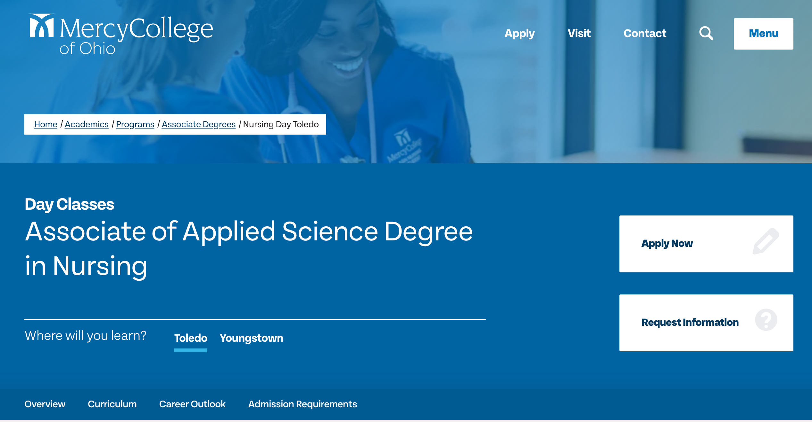
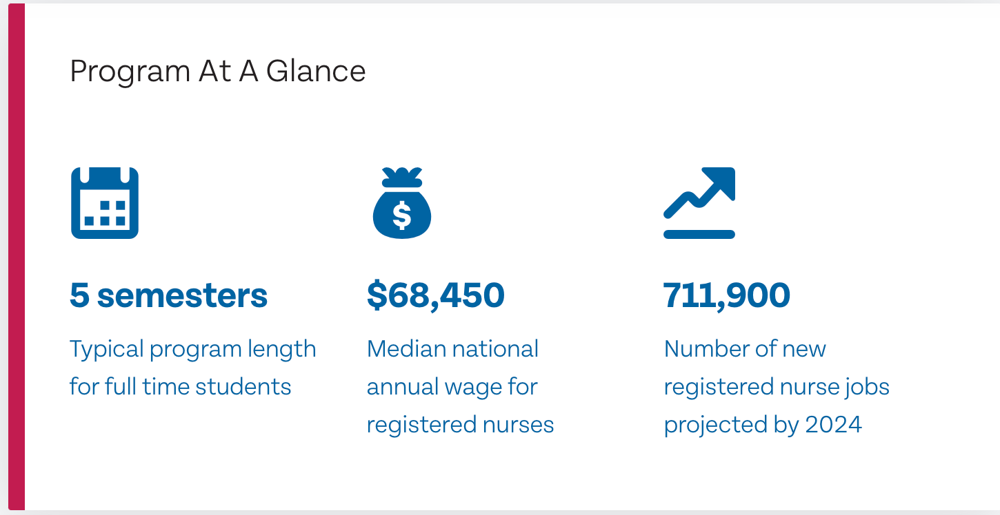

Madhouse LLC.
Role: Graphic Design Intern
Project: Mercy College of Ohio website design and development
Goal: Analyze the website to determine how to improve webflow and attract more users. Design the program at a glance infographic to make semester information easier to find.


- Adobe XD and XR
- Figma
- Site Mapping
- effective communication with clientele and superiors to make design decisions
Skills Used:
SI 339 Web Design, Development, and Acccessiblity
Role: Student
Project: Final Project
Goal: Develop a 3 page website using HTML, CSS, and JavaScript that effectifly uses flexbox, grid, EventListeners(). Design a website that is not only accessible but also responsive in mobile, and tablet mode.
Repository Link
- HTML 5
- CSS
- JavaScript
- Figma